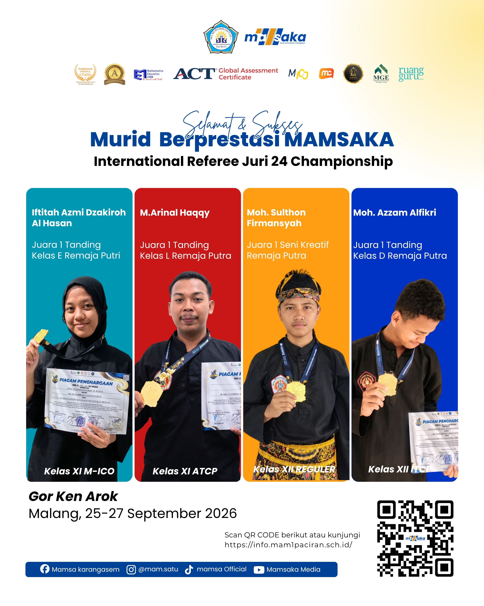
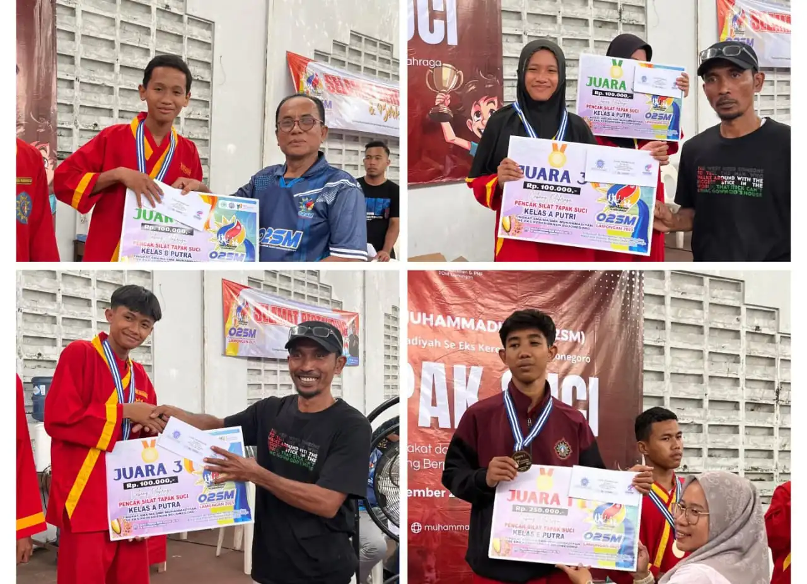

Sudut Merah
0
SIAP

Mencetak kader persyarikatan yang tangguh, berprestasi, berkepribadian mulia, serta siap membela kebenaran dan keadilan di Pondok Pesantren Karangasem Paciran.
Landasan
Iman & Akhlak
Pembinaan
Disiplin & Persaudaraan
Tujuan
Tangguh & Berprestasi
Perjalanan perjuangan dan landasan pergerakan Tapak Suci di Ponpes Karangasem.
Perjuangan Berdiri & Perkembangan
Dulu kegiatan Tapak Suci belum ada di Pondok Pesantren Karangasem. Keinginan kuat sekelompok orang menjadi awal berdirinya latihan di lingkungan pesantren.
Dengan semangat dan kerja keras, Tapak Suci Karangasem berkembang hingga meraih berbagai prestasi dan terus aktif sampai sekarang.
Mewujudkan Tapak Suci Karangasem sebagai wadah pembinaan generasi muda yang beriman, berakhlak mulia, tangguh, berprestasi, serta menjunjung tinggi nilai-nilai persaudaraan dan sportivitas.
Berbagai pilar latihan dan pembinaan anggota Tapak Suci Karangasem.
Latihan rutin santri bertujuan untuk pembinaan dalam menjaga diri, melatih fisik, kewaspadaan, dan kebugaran tubuh secara berkesinambungan.
Kebugaran · Kewaspadaan · Disiplin
Program khusus yang bertujuan untuk menjadikan atlet berprestasi dalam olahraga Tapak Suci, yang dipersiapkan khusus menuju gelanggang kejuaraan.
Teknik · Mental tanding · Sportivitas
Bertujuan untuk meningkatkan tingkat para siswa dan pengkaderan generasi penerus pesilat Tapak Suci yang handal secara sistematis.
Evaluasi · Jenjang · Pengkaderan
Papan skor dua sudut untuk latihan dan pertandingan. Masukkan nama pesilat, catat teknik, dan koreksi keputusan kapan saja.
Mode lokal
Buat atau gabung room untuk sinkron antar-HP.
0
SIAP
0
SIAP
Aksi Terakhir
Belum ada poin dicatat.
Pukulan +1 · Tendangan +2 · Bantingan +3 · Pelanggaran sesuai pilihan. Tanpa room, skor hanya tersimpan di browser ini.
Dokumentasi momen kejayaan dan berita kejuaraan resmi terbaru.
Keberhasilan membanggakan kembali diraih oleh kontingen pesilat Tapak Suci MAMSAKA Ponpes Karangasem Paciran yang tampil gemilang memborong medali juara dalam ajang Rektor Cup UMLA 2026.
Baca Selengkapnya di PWMU.CO.jpeg)
Berita catatan kejuaraan resmi dari arena turnamen nasional dan keberhasilan tim pesilat Ponpes Karangasem menyabet trophy Juara Umum I (Hadiah Pembinaan Rp 700.000).
Baca di Portal Web Ponpes Karangasem.jpg) Nasional 2022
Nasional 2022
Lima siswa SMPM Jipat Karangasem meraih juara pada 12th Airlangga Championship Tapak Suci National Open 2022.
Baca selengkapnya di LintasJatimNews.jpg) ACTSNO Jatim 2024
ACTSNO Jatim 2024
Kontingen SMPM Jipat membawa pulang dua medali emas dan lima medali perunggu dari 14th ACTSNO Jatim 2024 di Universitas Airlangga.
Baca selengkapnya di LintasJatimNews
Malang · 2026Para pendekar muda MAMSAKA meraih medali di GOR Ken Arok, Malang, pada 25–27 September 2026.
Lihat unggahan di Instagram
O2SM 2025Siswa Mamsaka meraih empat gelar juara dalam lomba Tapak Suci O2SM tingkat se-Keresidenan Bojonegoro 2025.
Baca selengkapnya di PWMU.CODokumentasi
Momen perjuangan dan kemenangan tim Tapak Suci Karangasem.
Rector Cup UMLA 2026
Tapak Suci Ponpes Karangasem
Hubungi kami atau kunjungi padepokan Tapak Suci Ponpes Karangasem Paciran.
Pondok Pesantren Karangasem, Kecamatan Paciran, Kabupaten Lamongan, Jawa Timur 62264.